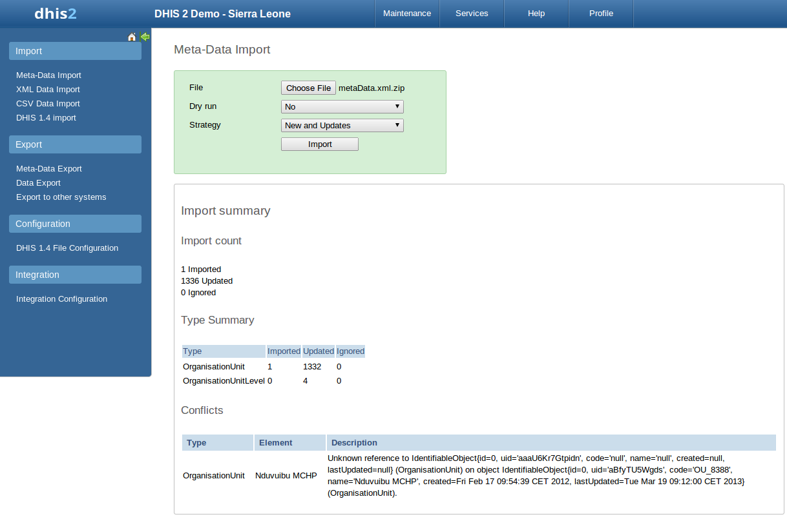

Table of Contents
In a primary health system, the HMIS typically involves a distributed application, where the same application is running in different geographical locations (PHCs,CHCs, hospitals, districts, and state). Most of these physical locations do not have Internet connectivity, and hence they work off-line. At some point (normally at the district level), the data needs to be synchronised in order to have a consolidated database for the a particular geographical region. For this, it is important to be able to export data from one location (which is working offline, say at the health facility level) to another one say at the district level where the data would need to be imported. This feature of exporting and importing is thus a crucial function of a HMIS. This feature also helps us overcome the dependency on Internet to some degree, as data updates can be transferred via USB key where there is no connectivity, or through email where there is limited Internet connectivity. DHIS 2 provides robust export-import functionality to fulfill these needs.
To access the main Import-Export module, choose A number of services are available, all of which will be described in detail in respective sections below.
Meta-data in the XML format known as DXF2 can be easily imported by accessing Services->Import-Export->Meta-Data import. Select the XML file by pressing "Select" and choose the file from your local file system. Both raw XML as well as a ZIP archive of the XML are supported.
There are two separate options for importing data.
-
Dry run: This is similar to the old preview option, this will do a dry run import, and give you information about any errors.
-
Strategy: There are three options here, "New and Updates", "New only", and "Update only". New and updates tells the importer to expect both new meta-data, and updates to existing ones. New only will only accept fresh meta-data, usually you would use this on a empty database. Updates only will only allow the meta-data to match meta-data that is already there (same identifiers, new name etc).
![[Note]](resources/images/admon/note.png) | Note |
|---|---|
|
It is highly recommend always using the Dry run option when importing data to make sure you keep control over any changes to your meta-data and databases being out of synch on data elements or orgunit names |
Before doing the import into your database, it is highly recommended that you run the import with the dry run option set to true first. This will enabled you to have a look at how many new, updates, and ignored meta-data there will be. After you have selected your file, set dry run to true, you can now click the import button. After doing this, you will be greeted by this window.
Here you can see a short summary of what was contained in your import file. To see further details, please click on the "display import summary" link.
 |
Here you can see that the import dry run was successful and the import contained 1 new organisation unit, 1332 updated, and 4 organisation unit levels.
Below you can see another example.
|  |
Here you can see that the organisation unit Nduvuibu MCHP had a unknown reference to an object with ID "aaaU6Kr7Gtpidn", which means that an object with this ID was not present in your imported file, and it could not be found in the existing database. Its important to note that even if a reference could not be found, the object will still be imported, but you might have to fix this directly in DHIS 2 later, if the reference should have pointed to something else.
The DXF2 format currently support matching for two identifiers, the internal DHIS2 identifier (known as a UID), and also using an external identifier called called a "code". When the importer is trying to search for references (like the one above), it will first go to the UID field, and then to the code field. This allows you to import from legacy systems without having a UID for every meta-data object. I.e. if you are importing facility data from a legacy system, you can leave out the ID field completely (DHIS 2 will fill this in for you) and the put the legacy systems own identifiers in the code field, this identifier is required to be unique. This not only works for organisation units, but for all kinds of meta-data, allowing for easy import from other systems.
DHIS 2 supports import of meta-data in the CSV format. Columns which are not required can be omitted in the CSV file, but the order will be affected. If you would like to specify columns which appear late in the order but not specify columns which appear early in the order you can include empty columns ("") for them.
To import CV meta-data go to import-export module and select CSV Meta-Data Import form the left side menu. You must select the object type which your CSV file contains. You can only upload one type of objects at the time. Upload your file and click update. The following object types are supported:
-
Data elements
-
Data element groups
-
Category options
-
Category option groups
-
Organisation units
-
Organisation unit groups
-
Validation rules
-
Option sets
The formats for the currently supported object types for CSV import are listed below.
Table 24.1. Data Element CSV Format
| Column | Required | Value (default first) | Description |
|---|---|---|---|
| Name | Yes | Name. Max 230 char. Unique. | |
| UID | No | UID | Stable identifier. Max 11 char. Will be generated by system if not specified. |
| Code | No | Stable code. Max 50 char. | |
| Short name | No | 50 first char of name | Will fall back to first 50 characters of name if unspecified. Max 50 char. Unique. |
| Description | No | Free text description. | |
| Form name | No | Max 230 char. | |
| Domain type | No | aggregate | tracker | Domain type for data element, can be aggregate or tracker. Max 16 char. |
| Value type | No | int | string | bool | trueOnly | date | unitInterval | Value type. Max 16 char. |
| Number type | No | int | posInt | negInt | number | zeroPositiveInt | Only relevant if type is int. Max 16 char. |
| Text type | No | text | longText | Only relevant if type is string. Max 16 char. |
| Aggregation operator | No | sum | average | count | stddev | variance | Operator indicating how to aggregate data in the time dimension. Max 16 char. |
| Category combination UID | No | UID | Stable identifier. Max 11 char. Will default to default category combination if not specified. |
| Url | No | URL to data element resource. Max 255 char. | |
| Zero is significant | No | false | true | Indicates whether zero values will be stored for this data element. |
Table 24.2. Organisation Unit CSV Format
| Column | Required | Value (default first) | Description |
|---|---|---|---|
| Name | Yes | Name. Max 230 characters. Unique. | |
| UID | No | UID | Stable identifier. Max 11 char. Will be generated by system if not specified. |
| Code | No | Stable code. Max 50 char. | |
| Parent UID | No | UID | Stable identifier. Max 11 char. |
| Short name | No | 50 first char of name | Will fall back to first 50 characters of name if unspecified. Max 50 characters. Unique. |
| Description | No | Free text description. | |
| UUID | No | UUID. Max 36 char. | |
| Opening date | No | 1970-01-01 | Opening date of organisation unit in YYYY-MM-DD format. |
| Closed date | No | Closed date of organisation unit in YYYY-MM-DD format, skip if currently open. | |
| Comment | No | Free text comment for organisation unit. | |
| Feature type | No | Can be Point, Polygon, MultiPolygon. Max 50 char. | |
| Coordinates | No | Coordinates used for geospatial analysis in Geo JSON format. | |
| URL | No | URL to organisation unit resource. Max 255 char. | |
| Contact person | No | Contact person for organisation unit. Max 255 char. | |
| Address | No | Address for organisation unit. Max 255 char. | |
| No | Email for organisation unit. Max 150 char. | ||
| Phone number | No | Phone number for organisation unit. Max 150 char. |
Table 24.3. Validation Rule CSV Format
| Column | Required | Value (default first) | Description |
|---|---|---|---|
| Name | Yes | Name. Max 230 characters. Unique. | |
| UID | No | UID | Stable identifier. Max 11 char. Will be generated by system if not specified. |
| Code | No | Stable code. Max 50 | |
| Description | No | Free text description. | |
| Instruction | No | Free text instruction. | |
| Importance | No | medium | high | low | |
| Rule type | No | validation | surveillance | |
| Operator | No | equal_to | not_equal_to | greater_than | greater_than_or_equal_to | less_than | less_than_or_equal_to | compulsory_pair | |
| Period type | No | Monthly | Daily | Weekly | Quarterly | SixMontly | Yearly | |
| Left side expression | Yes | Mathematical formula based on data element and option combo UIDs. | |
| Left side expression description | Yes | Free text. | |
| Left side null if blank | No | false | true | Boolean. |
| Right side expression | Yes | Mathematical formula based on data element and option combo UIDs. | |
| Right side expression description | Yes | Free text. | |
| Right side null if blank | No | false | true | Boolean. |
Table 24.4. Option Set CSV Format
| Column | Required | Value (default first) | Description |
|---|---|---|---|
| Name | Yes | Name. Max 230 characters. Unique. The option set values should be repeated for each option. | |
| UID | No | UID | Stable identifier. Max 11 char. Will be generated by system if not specified. |
| Code | No | Stable code. Max 50 char. | |
| Option | Yes | Option. Free text. The option set values should be repeated for each option. |
Table 24.5. Data Element Group, Category Option, Category Option Group, Organisation Unit Group CSV Format
| Column | Required | Value (default first) | Description |
|---|---|---|---|
| Name | Yes | Name. Max 230 characters. Unique. | |
| UID | No | UID | Stable identifier. Max 11 char. Will be generated by system if not specified. |
| Code | No | Stable code. Max 50 char. |
An example of a CSV file for data elements can be seen below. The first row will always be ignored. Notice how you can skip columns and rely on default values or simply leave columns blank:
name,uid,code,shortname,description,formname,domaintype,type,numbertype,texttype,aggregationoperator,categorycombo,url,zero "Women participated in skill development training",,"D0001","Women participated development training" "Women participated in community organizations",,"D0002","Women participated community organizations"
A minimal example for importing organisation units with a parent unit looks like this:
name,uid,code,parent "West province",,"WESTP","ImspTQPwCqd" "East province",,"EASTP","ImspTQPwCqd"
The format for option sets is special. One record represents an option, and the three first values representing the option set should be repeated for each option (record):
name,uid,code,option "Color",,,"Blue" "Color",,,"Green" "Gender",,,"Female" "Gender",,,"Male"
The GML import function can be used to import data prepared in the Geography Markup Language (GML). GML can be used to update the coordinates (both polygons and points). Once you have prepared your GML file as detailed in the chapter on "Importing coordinates", you can load the file with this function.
It is currently not possible to import an organisation unit hierarchy with GML. Therefore, you should create the organisation unit hierarchy separately, and then use GML to update the coordinates once the hierarchy has been created.
| Note |
|---|---|
|
Currently, it is only possible to import GML data by matching on the name of the organisation unit itself. Therefore, if you have organisation units with the same name in your organisation unit hierarchy (e.g. two clinics with exactly the same name), you will need to distinguish them before importing GML. Otherwise, both organisation units may be updated with the same set of coordinates. |